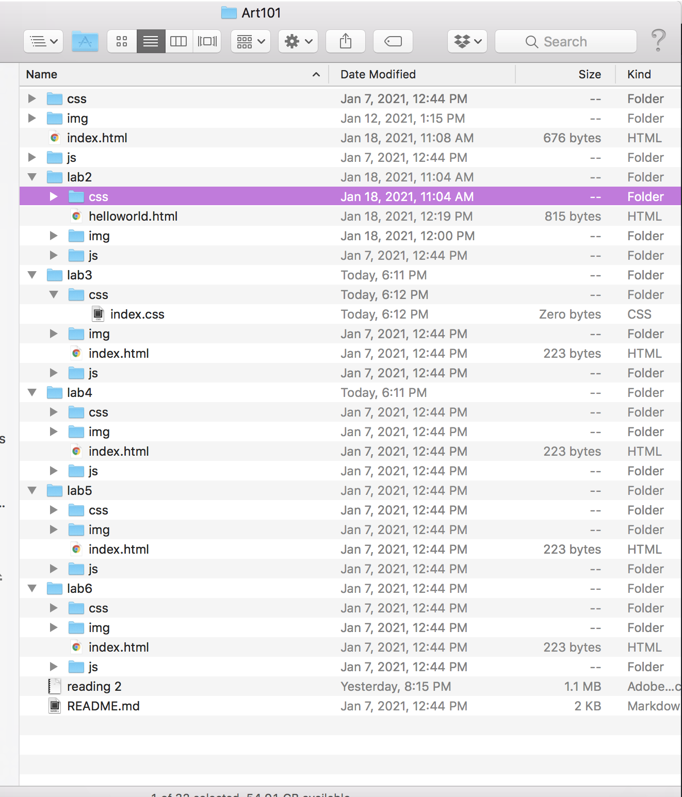

Lab 3 File Structures
The idea of this was was to further create a local file structure on my computer and add index.html files
Challenges
The problem I keep running into is my images not showing on my web page, an annoying photo icon with a slash through it keeps coming up!
Results
I realized that my file names were not the same, it was a mater of .JPG vs .jpeg
the other time this happened my image landed in the wrong folder, and I didnt know that we
had to put the folder name before the /img"
